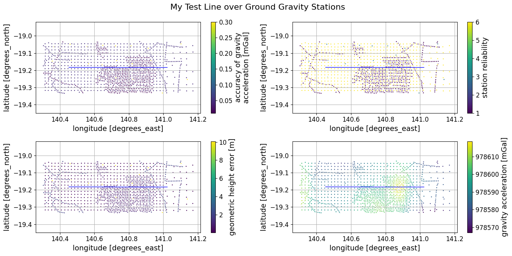

Compare to Ground Gravity¶
Airborne gravity test lines are flown to allow comparison with ground gravity. When making such comparisons, it is useful to know the sampling and quality of the ground gravity and, in Australia, this can be assessed by plotLinesOnGroundStns.
We access the Canobie data for an example data set.
from pathlib import Path
import galileoQC as qc
data_root = r'./CanobieData/'
canobieHDF_file = Path(r'./CanobieData/Canobie.hdf5')
We need to know the line number of at least one line, so here we report all the line numbers so that we can select one.
qc.reportLines(canobieHDF_file)
---------------------------------------------------------------------------
FileNotFoundError Traceback (most recent call last)
Cell In[2], line 1
----> 1 qc.reportLines(canobieHDF_file)
File ~/.local/lib/python3.12/site-packages/galileoQC/whizzFiles/reportData.py:116, in reportLines(whizzFile)
100 """
101 Prints a short summary of the flight-lines in a HDF5 Whizz file.
102
(...) 112
113 """
114 filename = str(whizzFile)
--> 116 oddlines, evenlines = _getOddEvenLines(whizzFile)
117 travlines, ctrllines = _getTravCtrlLines(whizzFile)
118 plandlines, unplandlines = _getPlannedLines(whizzFile)
File ~/.local/lib/python3.12/site-packages/galileoQC/gridFiles/oddeven.py:352, in _getOddEvenLines(whizz_file)
349 numodds = 0
350 oddlines = []
--> 352 with h5py.File(filename, 'r') as f:
353 lines_group = f[groupName]['Lines']
354 lines = lines_group.keys()
File ~/.local/lib/python3.12/site-packages/h5py/_hl/files.py:555, in File.__init__(self, name, mode, driver, libver, userblock_size, swmr, rdcc_nslots, rdcc_nbytes, rdcc_w0, track_order, fs_strategy, fs_persist, fs_threshold, fs_page_size, page_buf_size, min_meta_keep, min_raw_keep, locking, alignment_threshold, alignment_interval, meta_block_size, track_times, **kwds)
546 fapl = make_fapl(driver, libver, rdcc_nslots, rdcc_nbytes, rdcc_w0,
547 locking, page_buf_size, min_meta_keep, min_raw_keep,
548 alignment_threshold=alignment_threshold,
549 alignment_interval=alignment_interval,
550 meta_block_size=meta_block_size,
551 **kwds)
552 fcpl = make_fcpl(track_order=track_order, track_times=track_times,
553 fs_strategy=fs_strategy, fs_persist=fs_persist,
554 fs_threshold=fs_threshold, fs_page_size=fs_page_size)
--> 555 fid = make_fid(name, mode, userblock_size, fapl, fcpl, swmr=swmr)
557 if isinstance(libver, tuple):
558 self._libver = libver
File ~/.local/lib/python3.12/site-packages/h5py/_hl/files.py:232, in make_fid(name, mode, userblock_size, fapl, fcpl, swmr)
230 if swmr:
231 flags |= h5f.ACC_SWMR_READ
--> 232 fid = h5f.open(name, flags, fapl=fapl)
233 elif mode == 'r+':
234 fid = h5f.open(name, h5f.ACC_RDWR, fapl=fapl)
File h5py/_objects.pyx:54, in h5py._objects.with_phil.wrapper()
---> 54 'Could not get source, probably due dynamically evaluated source code.'
File h5py/_objects.pyx:55, in h5py._objects.with_phil.wrapper()
---> 55 'Could not get source, probably due dynamically evaluated source code.'
File h5py/h5f.pyx:106, in h5py.h5f.open()
--> 106 'Could not get source, probably due dynamically evaluated source code.'
FileNotFoundError: [Errno 2] Unable to synchronously open file (unable to open file: name = 'CanobieData/Canobie.hdf5', errno = 2, error message = 'No such file or directory', flags = 0, o_flags = 0)
And now we plot our flight-line over scatter plots of the ground gravity, and its accuracy, station reliability, and height error. The data are read from the Geoscience Australia site via pooch.
In this case, gravity accuracy is rated pretty good and height errors small; The data in dark colours (upper right plot) are of poor reliability; these look to be from some small exploration surveys and some data collected along roads. The regularly spaced gravity (yellow dots) are rated of high reliability.
Overall, it seems that the ground gravity data here are pretty good.
qc.plotLinesOnGroundStns(canobieHDF_file, '100020.000',
fig_title='My Test Line over Ground Gravity Stations')
